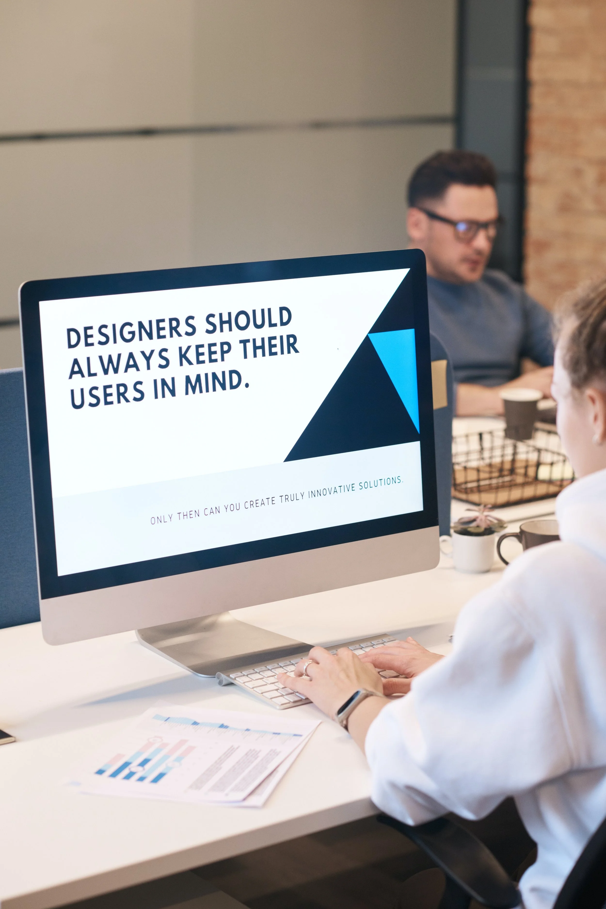

AI Content Systems at Intuit
Turning thousands of help articles into something writers and support experts could search and reuse
Overview

We had thousands of help articles and no good way to use them. Writers rewrote answers that already existed, and support experts spent too long hunting for the right one. I built a system that pulls all of that content into a structured form AI tools can work with, so people can find, compare, and reuse what we've already written.
A lot of what I've built since grew out of it.
Context
Intuit's ProTax Group maintains thousands of public help articles for its professional tax products. They were written over many years by different teams and change constantly as tax law and the products change.
The content was there, but searching and reusing it across products and regions was slow for writers and support experts alike. Access to AI tools was also uneven. Full-time employees had some, and many Tier 1 and Tier 2 support experts were contractors with none.
The Problem
In practice, that meant people rewrote or duplicated content that already existed, spent too much time looking for the authoritative answer, and ended up with slightly different guidance for the same thing across products. The people who answer customers directly had the least access to tools that could help.
We had plenty of content. What we didn't have was a structured way to search it and reuse it.
My Role
I started this on my own, on top of my regular content design work, and owned it from there. I spotted the gap, designed how content would be captured and structured, wrote and maintained the scripts that pull it in, set up the AI workflows for writers, and worked with other teams on ways to get it to support experts through dashboards and Slack.
The Solution
The system has three parts.

1. Capturing and structuring the content
I wrote scripts that collect our public help content across products, about 4,000 articles, and keep the metadata that makes it useful: URLs, titles, and IDs. The content is cleaned up and organized by product and use case.
2. Writing and reusing with AI
That structured content went into product-specific AI workspaces. Writers could find existing guidance fast, spot overlapping articles to consolidate, and draft updates that matched what we'd already published. I also partnered with the TurboTax consumer team on a parallel setup for their article and video script writing.
3. Getting it to support experts
For the support experts without AI access, I worked with others on dashboards and Slack-based assistants, so they could get answers in the tools they already used.
Impact
It started as a tool for my own work and became something the team relies on. Writers spend less time rewriting what already exists, guidance is more consistent across products, and new writers get up to speed faster. Support experts get to authoritative answers more easily.
It has since been extended to more products and regions, including Canadian products and bilingual (English and French) content. The same structured corpus later became the base for Authoring Accelerator Agent and the help-content authoring plugin.
What I Learned
The useful part of AI here was the plumbing. Getting content into a clean, structured shape did more for the team than any single prompt. It also had to fit how Intuit works day to day, including who has access to what, or nobody would have used it.